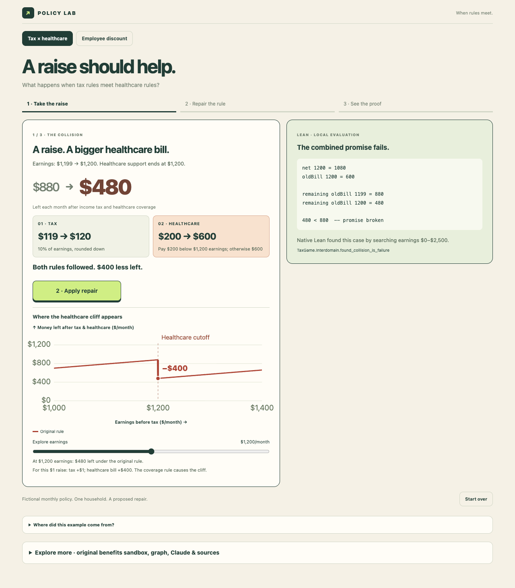

Interactive version is Lean-backed (calls a local API), so it runs standalone, not embedded:
cd tax-policy && python3 demo.py --port 8768 → http://127.0.0.1:8768/. Screenshot below; Lean specs in tax-policy/TaxGame/.
theorem:
current_has_cliff (a witness) vs proposed_no_cliff (∀ income). specs: TaxGame/*.lean · Catala source